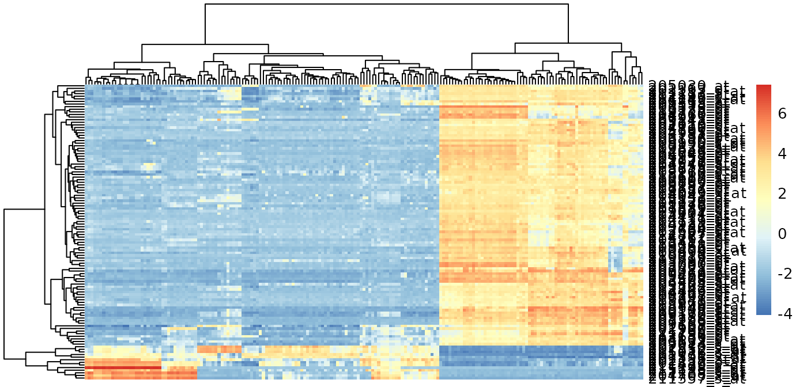
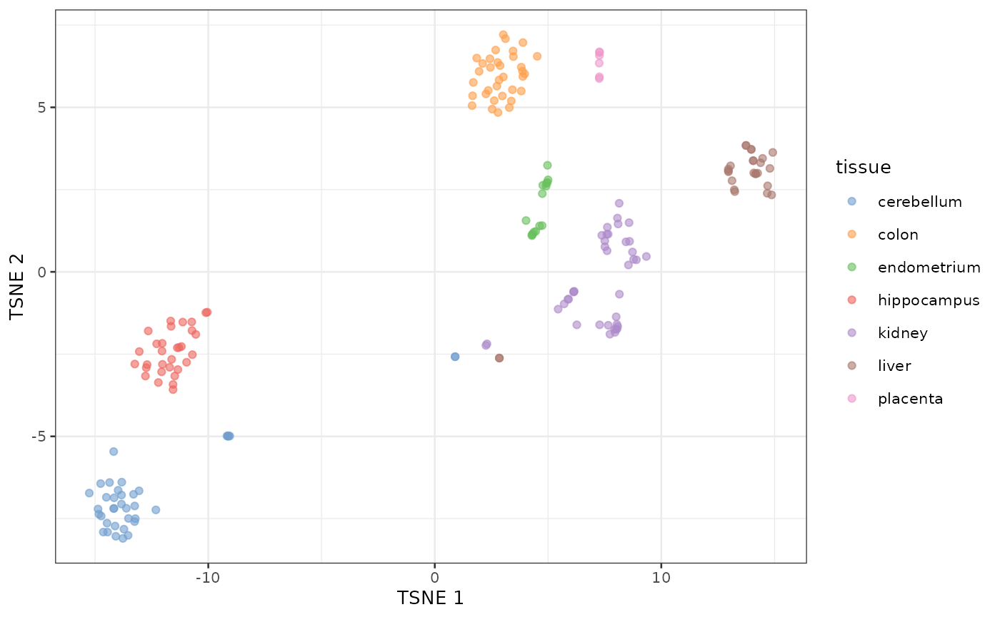
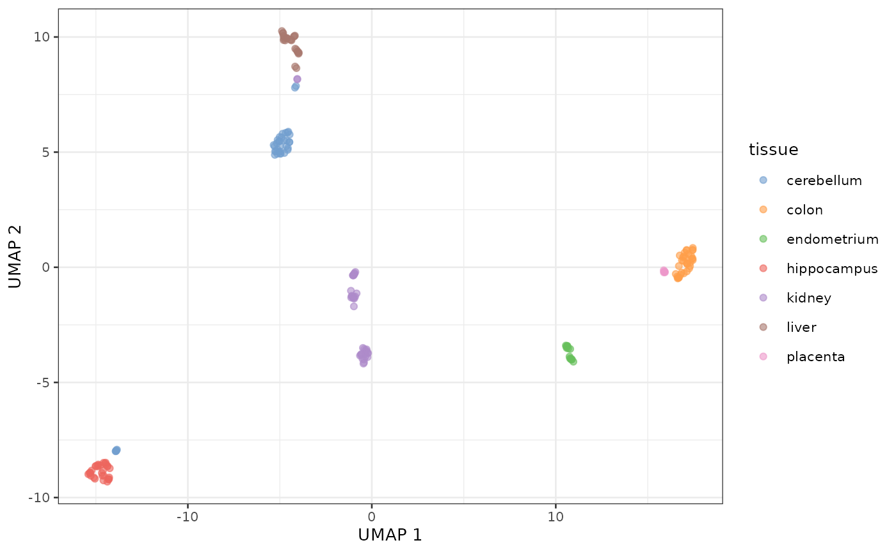

Applied Statistics for High-throughput Biology: Session 2
Levi Waldron
Source:vignettes/day2_unsupervised.Rmd
day2_unsupervised.RmdSchematic of a typical scRNA-seq analysis workflow

Each stage (separated by dashed lines) consists of a number of specific steps, many of which operate on and modify a SingleCellExperiment instance. (original image)
Day 4 outline
Book chapter 8:
- Distances in high dimensions
- Principal Components Analysis and Singular Value Decomposition
- Multidimensional Scaling
- t-SNE and UMAP
Metrics and distances
A metric satisfies the following five properties:
- non-negativity
- symmetry
- identification mark
- definiteness if and only if
- triangle inequality
- A distance is only required to satisfy 1-3.
- A similarity function satisfies 1-2, and increases as and become more similar
- A dissimilarity function satisfies 1-2, and decreases as and become more similar
Euclidian distance (metric)
- Remember grade school:
Euclidean d = . - Side note: also referred to as norm
Euclidian distance in high dimensions
## BiocManager::install("genomicsclass/tissuesGeneExpression") #if needed
## BiocManager::install("genomicsclass/GSE5859") #if needed
library(GSE5859)
library(tissuesGeneExpression)
data(tissuesGeneExpression)
dim(e) ##gene expression data
#> [1] 22215 189
table(tissue) ##tissue[i] corresponds to e[,i]
#> tissue
#> cerebellum colon endometrium hippocampus kidney liver
#> 38 34 15 31 39 26
#> placenta
#> 6Interested in identifying similar samples and similar genes
Notes about Euclidian distance in high dimensions
- Points are no longer on the Cartesian plane
- instead they are in higher dimensions. For example:
- sample is defined by a point in 22,215 dimensional space: .
- feature is defined by a point in 189 dimensions
Euclidean distance as for two dimensions. E.g., the distance between two samples and is:
and the distance between two features and is:
Euclidian distance in matrix algebra notation
The Euclidian distance between samples and can be written as:
with and columns and .
Note about matrix algebra in R
- R is very efficient at matrix algebra
- for very large matricies, see the:
- Matrix CRAN package (sparse matrices)
- rhdf5 and DelayedArray Bioconductor package (on-disk arrays)
The dist() function
Excerpt from ?dist:
dist(
x,
method = "euclidean",
diag = FALSE,
upper = FALSE,
p = 2
)-
method: the distance measure to be used.
- This must be one of “euclidean”, “maximum”, “manhattan”, “canberra”, “binary†or “minkowski”. Any unambiguous substring can be given.
-
distclass output fromdist()is used for many clustering algorithms and heatmap functions
Caution: dist(e) creates a 22215 x 22215 matrix
that will probably crash your R session.
Note on standardization
- In practice, features (e.g. genes) are typically “standardized”, i.e. converted to z-score:
- This is done because the differences in overall levels between
features are often not due to biological effects but technical ones,
e.g.:
- GC bias, PCR amplification efficiency, …
Not much distance is lost in the second dimension
- Not much loss of height differences when just using average heights
of twin pairs.
- because twin heights are highly correlated
Singular Value Decomposition (SVD)
SVD generalizes the example rotation we looked at:

note: the above formulation is for rows columns
: the rows x cols matrix of measurements
: matrix relating original scores to PCA scores (loadings)
: diagonal matrix (eigenvalues)
-
: orthogonal matrix (eigenvectors or PCA scores)
- orthogonal = unit length and “perpendicular†in 3-D
SVD of gene expression dataset
Center but do not scale, just to make plots before more legible:
SVD:
Components of SVD results
dim(s$u) # loadings
#> [1] 22215 189
length(s$d) # eigenvalues
#> [1] 189
dim(s$v) # d %*% vT = scores
#> [1] 189 189
PCA interpretation: loadings
-
(loadings): relate the principal component
axes to the original variables
- think of principal component axes as a weighted combination of original axes
Genes with high PC1 loadings
e.pc1genes <-
e.standardize[p$rotation[, 1] < -0.03 |
p$rotation[, 1] > 0.03,]
pheatmap::pheatmap(
e.pc1genes,
scale = "none",
show_rownames = TRUE,
show_colnames = FALSE
)
PCA interpretation: eigenvalues
- (eigenvalues): standard deviation scaling factor that each decomposed variable is multiplied by.
PCA interpretation: eigenvalues
Alternatively as cumulative % variance explained (using
cumsum() function)
PCA interpretation: scores
- (scores): The “datapoints†in the reduced prinipal component space
- In some implementations (like
prcomp()), scores are already scaled by eigenvalues:
Multi-dimensional Scaling (MDS)
- also referred to as Principal Coordinates Analysis (PCoA)
- a reduced SVD, performed on a distance matrix
- identify two (or more) eigenvalues/vectors that preserve distances
t-SNE
- non-linear dimension reduction method very popular for visualizing
single-cell data
- almost magical ability to show clearly separated clusters
- performs different transformations on different regions
- computationally intensive so usually done only on top ~30 PCs
- t-SNE is sensitive to choices of tuning parameters
- “perplexity†parameter defines (loosely) how to balance attention between local and global aspects of data
- optimal choice of perplexity changes for different numbers of cells from the same sample.
- perplexity = is one rule of thumb. is another (default of Rtsne)
- Here is a good post by Nikolay Oskolkov on this topic.
t-SNE caveats
- uses a random number generator
- apparent spread of clusters is completely meaningless
- distance between clusters might also not mean anything
- parameters can be tuned to make data appear how you want
- can show apparent clusters in random noise. Should not be used for statistical inference
- Try it to gain some intuition: https://distill.pub/2016/misread-tsne/)

PCA of Zeisel single-cell RNA-seq dataset
sce.zeisel <- fixedPCA(sce.zeisel, subset.row=NULL)
plotReducedDim(sce.zeisel, dimred="PCA", colour_by="level1class")Principal Components Analysis of Zeisel dataset
t-SNE of the same dataset
sce.zeisel <- runTSNE(sce.zeisel, dimred="PCA")
plotReducedDim(sce.zeisel, dimred="TSNE", colour_by="level1class")t-SNE clustering of Zeisel dataset
UMAP vs t-SNE
- UMAP may better preserve local and global distances
- tends to have more compact visual clusters with more empty space between them
- more computationally efficient
- also involves random number generation
- Note: I prefer not setting the random number seed during exploratory analysis in order to see the random variability
UMAP of the same dataset
sce.zeisel <- runUMAP(sce.zeisel, dimred="PCA")
plotReducedDim(sce.zeisel, dimred="UMAP", colour_by="level1class")UMAP representation of the Zeisel dataset
tSNE of tissue microarray data
Using default parameters and no log transformation
sct <- SingleCellExperiment(e)
sct$tissue <- tissue
# fake the log normalization because it is undesirable for microarray data
names(assays(sct)) <- "logcounts"
sct <- fixedPCA(sct, subset.row=NULL)
sct <- runTSNE(sct, dimred="PCA")
plotReducedDim(sct, dimred="TSNE", colour_by="tissue")
UMAP of tissue microarray data
Also using default parameters and no log transformation
sct <- runUMAP(sct, dimred="PCA")
plotReducedDim(sct, dimred="UMAP", colour_by="tissue")
Summary: distances and dimension reduction
- Note: signs of eigenvalues (square to get variances) and eigenvectors (loadings) can be arbitrarily flipped
- PCA and MDS are useful for dimension reduction when you have correlated variables
- Variables are always centered.
- Variables are also scaled unless you know they have the same scale in the population
- PCA projection can be applied to new datasets if you know the matrix calculations
- PCA is subject to over-fitting, screeplot can be tested by cross-validation
- PCA is often used prior to t-SNE and UMAP for de-noising and computational tractability
Lab exercise
- OSCA Basics: Chapter 4 Dimensionality Reduction
- Optional if you are interested, OSCA Advanced: Chapter 4 Dimensionality reduction, redux